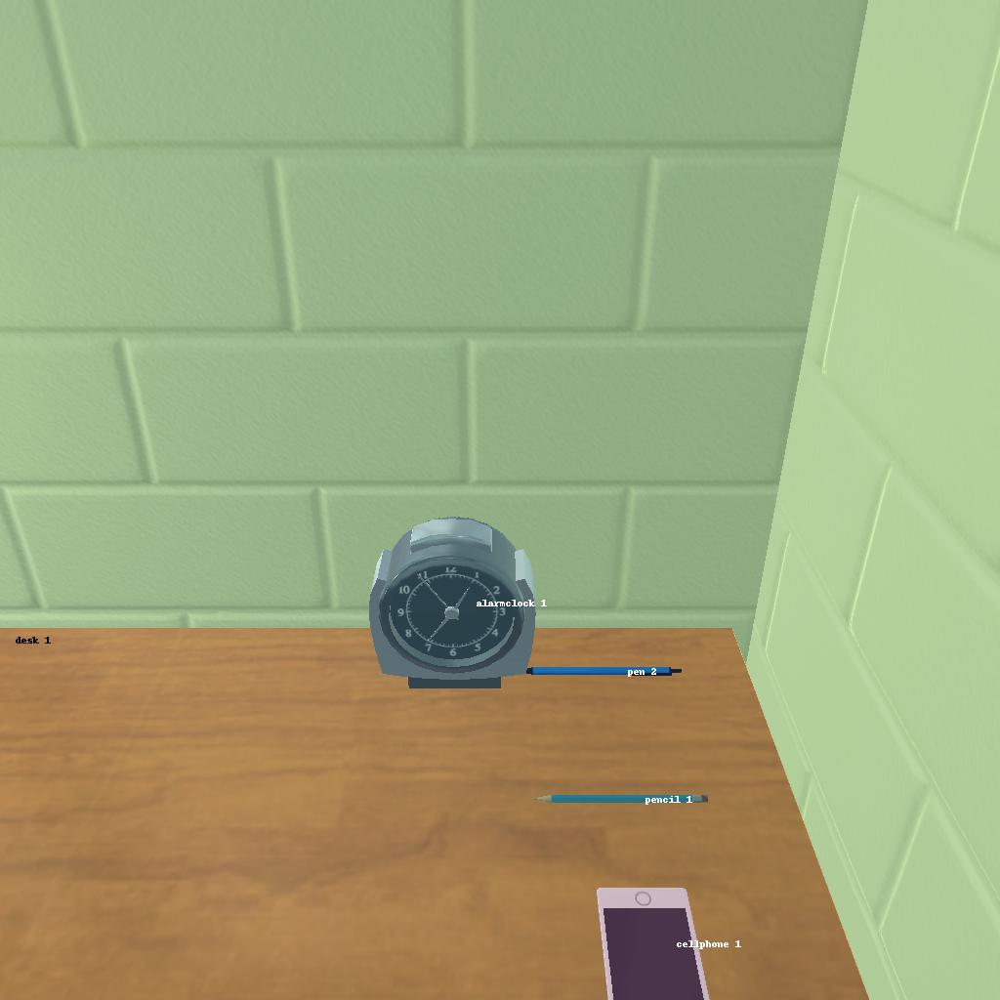

---------------------------------------------------------task: 8---------------------------------------------------------
--------------------------------------------------------------------------------------------------------------------------------------------------------------------
--------------------------------------------------------------------------------------------------------------------------------------------------------------------
Step:--------------------------------------------------------------------------3-------------------------------------------------------------------------------
----------------------------------------
VLM Prompt:
Image1:
**Instruction**
1. Analyze the provided image to identify all visible household objects, focusing on those relevant to the task description "put some laptop on desk."
2. Use the analysis of the image and the task hint "The agent must find an object of the desired type, pick it up, find the correct location to place it, and put it down there." to answer the question: what is the most reasonable action in the choices for the task description "put some laptop on desk"?
4. Decide and write the answer using the template: The answer is: (i): , where i is the real number. If there is no desired object in the image, search every place based on **Initial Observation** to find the object. And if no one is exactly correct, choose a similar answer.
**Initial Observation**
You are in the middle of a room. Looking quickly around you, you can see bed (1), garbagecan (1), desk (1), sidetable (1), drawer (1-5), laundryhamper (1)
**Answer Choices**
(1): go to bed 1
(2): go to garbagecan 1
(3): go to sidetable 1
(4): go to drawer 2
(5): go to laundryhamper 1
(6): go to drawer 3
(7): go to drawer 4
(8): go to drawer 5
(9): take alarmclock 1 from desk 1
(10): take cellphone 1 from desk 1
(11): take pencil 1 from desk 1
(12): take pen 2 from desk 1
(13): examine desk 1
**Answer**
Let's think step by step by following the instructions.
----------------------------------------
----------------------------------------
Original Response:
The task is to "put some laptop on desk." In the provided image, we can see a desk (desk 1) with an alarm clock (alarmclock 1), two pens (pen 2 and pencil 1), and a cellphone (cellphone 1). However, there is no laptop visible on the desk or anywhere else in the image.
Based on the **Initial Observation**, other locations in the room are mentioned where a laptop could potentially be found, such as drawers (drawer 1-5) or a sidetable (sidetable 1). The task hint suggests that the agent must find the object of the desired type, which in this case is a laptop.
Since none of the answer choices directly involve finding or taking a laptop, and the image does not show a laptop, the most reasonable action would be to search the locations where a laptop might be, starting with the drawers since they are common places to store such items.
The answer is: (4): go to drawer 2, and if the laptop is not there, continue searching the drawers and other locations mentioned in the **Initial Observation**.
----------------------------------------
----------------------------------------
>>> Refine Original VLM Response and Get Pure Action: go to drawer 2, and if the laptop is not there, continue searching the drawers and other locations mentioned in the **Initial Observation**
----------------------------------------
-----------------------------------------------------------------
Running time: 10.369293212890625 seconds
Total Money: 2.319730000000001
-----------------------------------------------------------------
-----------------------------------------------------------------
Text Observation:Nothing happens.
-----------------------------------------------------------------
UNSUCCEED